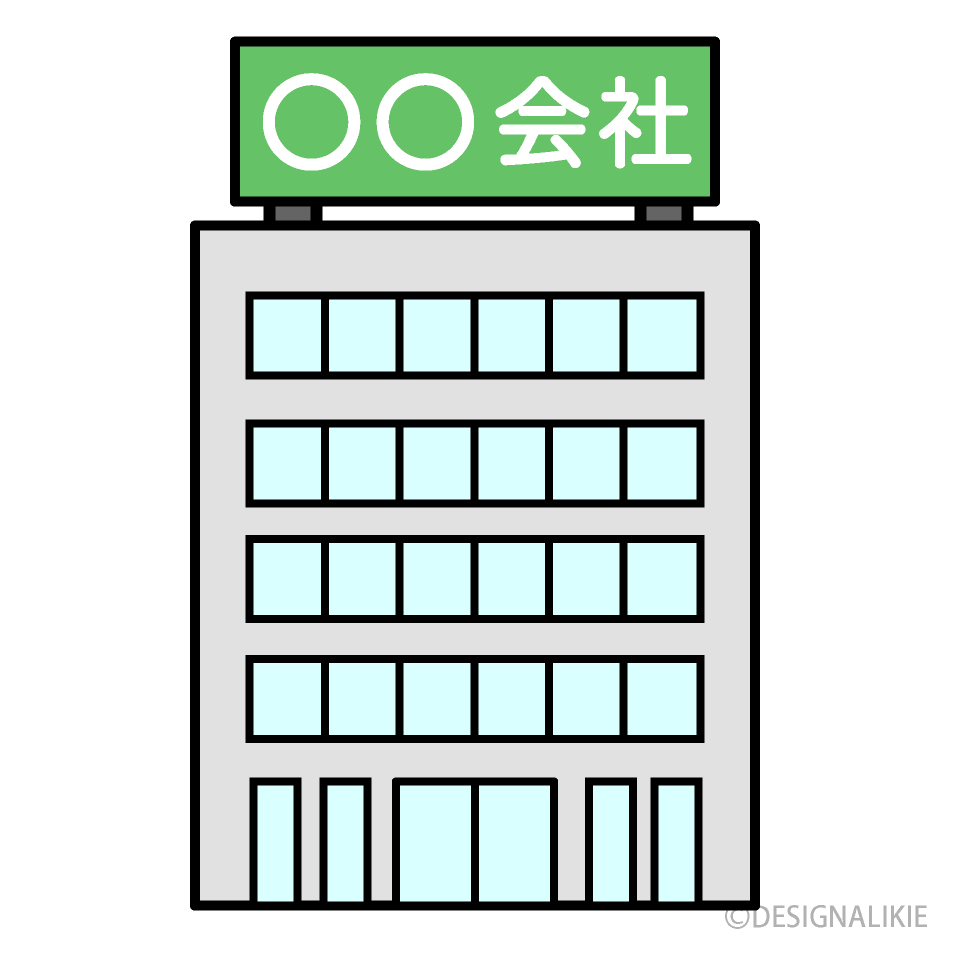

会計 会計士の基盤
会計
簿記 会計士から効率的勉強方法の教授

私たちの学科は、最新の情報技術と経営理論を融合させた教育を提供します。
本ページはITを感じてもらうために、技巧を使ったページになるためご了承ください。
情報伝達に欠かせない映像 編集方法 撮影技法 視覚エフェクト を学ぶ
情報の掲載に必須なwebページ 効果的な視覚効果 配置方法 を学ぶ
プログラミングの基本になるプログラミング言語 プログラムのノウハウ プログラムの覚え方
有名企業を知る 歴史 キーとなる戦略
顧客への心理テクニック
簿記 会計士から効率的勉強方法の教授
〒000-0000 北方キャンパス 岐阜県大垣市 TEL：111-11-11
〒222-2222 西之川キャンパス 岐阜県大垣市